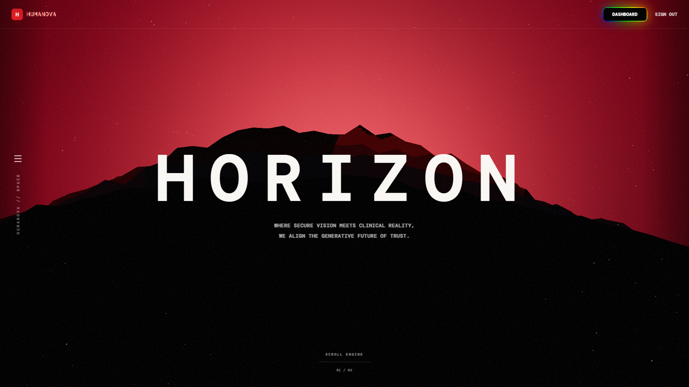
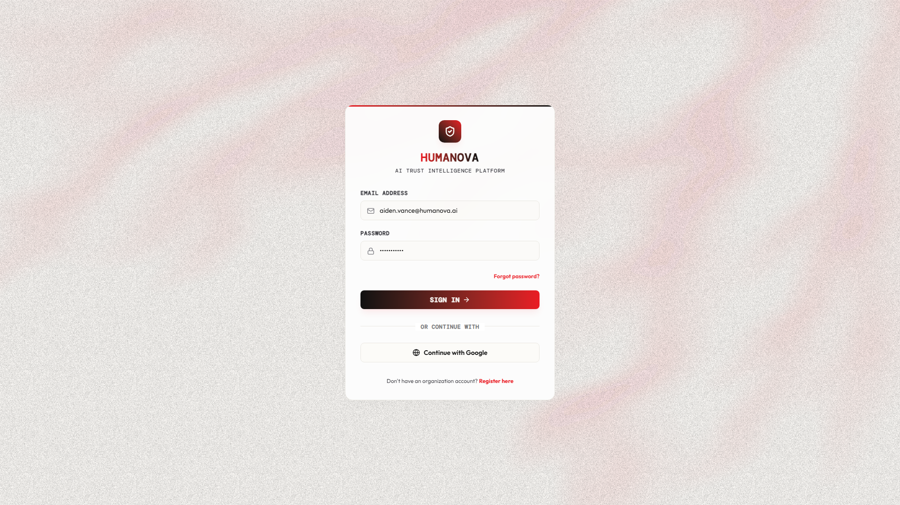
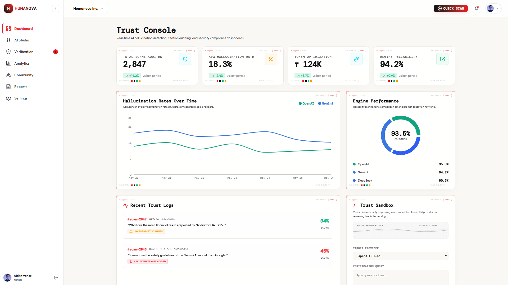
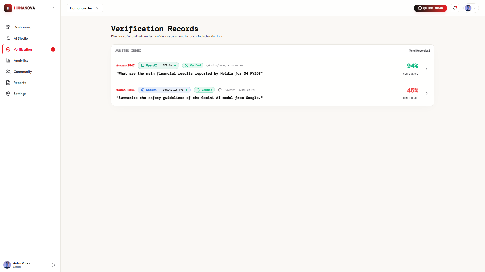
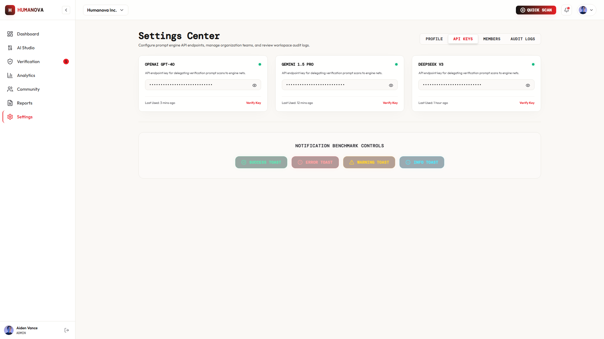
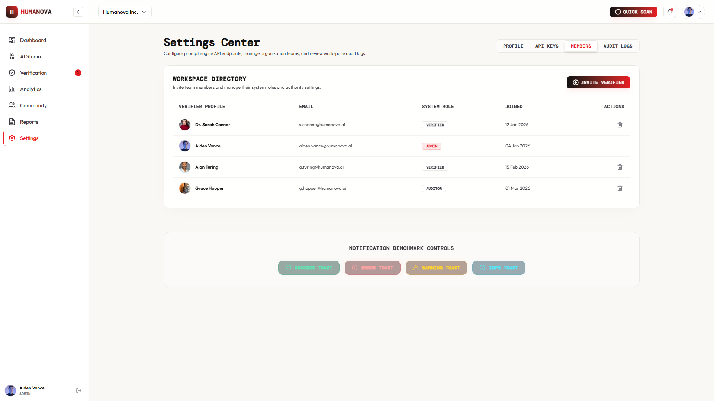

1. Executive Summary
By Week 09 of the CSE 4204 Mobile Computing Lab curriculum, Team 07 has reached a critical integration milestone in the engineering of Humanova—an enterprise-grade, multi-tenant AI Trust Governance & Verification Platform. The primary focus of this milestone is transitioning from standalone, modular codebases into a unified, integrated software application.
The team has successfully established the foundational backend architecture in Laravel 12, modeled 35+ relational database tables with 46 Eloquent models in MySQL 8, engineered token-based authentication with 7-tier Role-Based Access Control (RBAC), and developed a reactive, accessible frontend interface using React 19, TypeScript, Vite, and Tailwind CSS.
2. Project Architecture & System Topology
Humanova follows a Hybrid SaaS & Distributed AI Middleware Architecture. The presentation layer communicates securely with the Laravel API gateway, which manages identity, authorization, persistence, and dispatches background verification tasks to specialized NLP microservices.
2.1 Core Architectural Principles
- Strict Tenant Isolation: Every scan, API key, user group, and audit log is strictly partitioned by Organization ID.
- Stateless API Authentication: Secured via Laravel Sanctum Bearer tokens with cryptographic hashing.
- Decoupled Inference Microservice: Heavy natural language processing tasks are isolated in a Python FastAPI microservice to prevent blocking PHP gateway worker threads.
3. Feature Completion Checklist & Status
Below is the comprehensive feature tracking matrix evaluating all deliverables outlined in the approved Project Proposal, SRS, and System Design specifications.
| ID | Feature Name | Tier | Status | Reason / Technical Note | Target Date |
|---|---|---|---|---|---|
| F-01 | User Registration & Validation | Auth / API | Completed | Email uniqueness, password complexity, tenant workspace creation. | Aug 12, 2026 |
| F-02 | User Login & Sanctum Token | Auth / API | Completed | Password hash verification and Bearer token issuance. | Aug 12, 2026 |
| F-03 | User Logout & Revocation | Auth / API | Completed | Token deletion from personal_access_tokens table. |
Aug 13, 2026 |
| F-04 | Role-Based Access Control (RBAC) | Security | Completed | 7 distinct user roles and permission gates active. | Aug 14, 2026 |
| F-05 | Multi-Tenant Org Isolation | Database | Completed | Data segregation by organization_id foreign keys. |
Aug 15, 2026 |
| F-06 | UI Design System & Tokens | Frontend | Completed | Atoms, buttons, badges, typography, dark theme tokens. | Aug 10, 2026 |
| F-07 | Landing Page & Hero Canvas | Frontend | Completed | Futuristic grid canvas, stats counters, value props. | Aug 08, 2026 |
| F-08 | Auth Views (Login/Register) | Frontend | Completed | Interactive forms, error alerts, responsive layout. | Aug 11, 2026 |
| F-09 | User Analytics Dashboard | Frontend | Completed | Scan volume metrics, trust scores, recent logs table. | Aug 13, 2026 |
| F-10 | Provider API Key Manager | Frontend | Completed | UI for configuring OpenAI, Gemini, DeepSeek keys. | Aug 14, 2026 |
| F-11 | Community Hallucination Feed | Frontend | Completed | Report cards, upvoting controls, category badges. | Aug 15, 2026 |
| F-12 | User Profile & Reputation | Frontend | Completed | Reputation score gauge, badges, audit history. | Aug 15, 2026 |
| F-13 | Super Admin Dashboard UI | Frontend | Completed | System health telemetry, queue rates, verifiers. | Aug 16, 2026 |
| F-14 | 35+ Database Migrations | Database | Completed | Foreign keys, cascades, indexes, JSON payload columns. | Aug 13, 2026 |
| F-15 | 46 Eloquent ORM Models | Backend | Completed | Relationships, scopes, casts, and mutators defined. | Aug 14, 2026 |
| F-16 | API Route Grouping (40+ routes) | Gateway | Completed | Versioned, throttled, authenticated endpoints. | Aug 15, 2026 |
| F-17 | Auth State Sync (Zustand) | Client State | In Progress | Hydration working; auto-refresh token logic pending. | Aug 22, 2026 |
| F-18 | Live Scan Submission Bridge | Integration | In Progress | Form captures input; queue worker response wiring. | Aug 23, 2026 |
| F-19 | Provider Key AES Encryption | Security | In Progress | CRUD endpoints active; cryptographic hook in test. | Aug 22, 2026 |
| F-20 | FastAPI Microservice Core | AI Pipeline | In Progress | Endpoints scaffolded; awaiting live transformer models. | Aug 24, 2026 |
| F-21 | Claim Extraction Logic | AI Pipeline | In Progress | Mock sentence parser active; spaCy NER pending. | Aug 25, 2026 |
| F-22 | Live LLM Provider Orchestrator | AI Live API | Not Started | Awaiting external API key quota configuration. | Aug 29, 2026 |
| F-23 | Web Evidence Retrieval Engine | AI Live API | Not Started | Awaiting Serper/Tavily Search API key provisioning. | Aug 30, 2026 |
| F-24 | Automated PDF Report Export | Reporting | Not Started | Scheduled for end-of-project export milestone. | Sep 02, 2026 |
4. Frontend–Backend Integration Status
Connecting frontend visual components to backend RESTful endpoints was a primary objective of Week 09. Temporary hardcoded data structures within React have been moved to a unified API client service layer (src/services/api.ts).
| Domain | Frontend Component | API Endpoint | Method | Status |
|---|---|---|---|---|
| Auth | Register.tsx |
/api/v1/auth/register |
POST |
Connected |
| Auth | Login.tsx |
/api/v1/auth/login |
POST |
Connected |
| Auth | Navbar.tsx |
/api/v1/auth/logout |
POST |
Connected |
| Auth | authStore.ts |
/api/v1/auth/me |
GET |
Connected |
| Organization | OrganizationView.tsx |
/api/v1/organizations |
GET |
Connected |
| API Keys | ApiKeysView.tsx |
/api/v1/provider-keys |
GET/POST |
Active Testing |
| Scans | VerificationWorkspace.tsx |
/api/v1/scans |
POST |
Mock Response |
| Reports | CommunityFeed.tsx |
/api/v1/reports |
GET/POST |
Active Testing |
| Analytics | DashboardHome.tsx |
/api/v1/analytics/dashboard |
GET |
Wiring Charts |
5. User Authentication, Session & RBAC
The authentication layer is fully operational and secured using Laravel Sanctum. The flow enforces cryptographic password validation and issues scoped Bearer tokens stored in localStorage.
5.1 Role-Based Access Control (RBAC) Matrix
| Role Name | Level | Run Scans | Submit Reports | Vote | Moderation Queue | Manage Keys | Super Admin |
|---|---|---|---|---|---|---|---|
| Guest | 0 | ❌ | ❌ | ❌ | ❌ | ❌ | ❌ |
| User | 1 | ✅ | ✅ | ✅ | ❌ | ❌ | ❌ |
| Researcher | 2 | ✅ | ✅ | ✅ | ❌ | ❌ | ❌ |
| Trusted Verifier | 3 | ✅ | ✅ | ✅ | ✅ | ❌ | ❌ |
| Moderator | 4 | ✅ | ✅ | ✅ | ✅ | ❌ | ❌ |
| Organization Admin | 5 | ✅ | ✅ | ✅ | ❌ | ✅ | ❌ |
| Super Admin | 6 | ✅ | ✅ | ✅ | ✅ | ✅ | ✅ |
6. AI Integration Status & Staging Architecture
Humanova's AI verification engine is engineered as a dedicated Python FastAPI microservice to handle claim extraction, similarity analysis, and contradiction detection independently from the core PHP backend.
7. Major User Workflows
7.1 Workflow A: User Authentication & Dashboard Access
Path: / (Landing) → /login → POST /api/v1/auth/login → Sanctum Token Stored → /dashboard.
The user logs in, receives a Bearer token, hydates client state, and accesses personalized verification metrics.
7.2 Workflow B: Content Verification & Fact Auditing (Core Path)
Path: /verification → Submit Text → POST /api/v1/scans → NLP Claim Extraction → Scoring Engine → Highlighted Overlay.
The user submits AI-generated text; the system decomposes the text into individual claims, calculates trust scores, and displays verified vs. suspicious segments.
7.3 Workflow C: Community Hallucination Reporting
Path: /community → "Submit Report" Modal → POST /api/v1/reports → Moderation Queue → Verified Knowledge Base.
Users crowdsource hallucination findings, which verifiers review to update the shared intelligence dataset.
7.4 Workflow D: Multi-Tenant Provider API Key Governance
Path: /settings/api-keys → Enter API Key → AES-256 Encryption → user_api_keys Table → Shared Workspace Access.
Organization admins pool API keys safely without exposing raw credentials to team members.
8. UI/UX Refinements & Design System
Building on the approved Week 05 design mockups, the user interface was refined in Week 09 to ensure accessibility, responsiveness, and consistent visual hierarchy.
- Dynamic Claim Highlighting: Color-coded overlays visually categorize text into 🟢 Verified, 🟡 Uncertain, and 🔴 Hallucination.
- Responsive Multi-Device Scaling: Fluid CSS grid layouts adapt seamlessly from mobile viewports (375px) to ultra-wide displays (1920px).
- Shimmer Skeletons: Added pulse animations during asynchronous data fetches to eliminate layout shifts.
- Accessible Form Feedback: Live field validation alerts and disabled button states during network requests prevent accidental duplicate submissions.
9. Error Handling & Fault Tolerance
The platform is designed to handle edge cases gracefully, providing clear user feedback rather than raw errors or crashes.
| Scenario | Detection Point | HTTP Status | User-Facing Feedback Message |
|---|---|---|---|
| Invalid Input | Client Form Validation | N/A (Client) | "Please enter a valid email and a password with at least 8 characters." |
| Expired Session | Sanctum Middleware | 401 Unauthorized |
"Your session has expired. Redirecting to login..." |
| Forbidden Role | RBAC Route Gate | 403 Forbidden |
"Access Denied: You do not have permission to view the Moderation Queue." |
| Rate Limit Exceeded | API Throttle Guard | 429 Too Many Req |
"Rate limit reached. Please wait 60 seconds before scanning again." |
| Database Offline | Backend Core Handler | 503 Service Unavail |
"The service is temporarily experiencing database connectivity issues." |
| NLP Microservice Timeout | Gateway Guzzle Client | 504 Gateway Timeout |
"Verification engine timed out. Your scan has been queued for background processing." |
10. Scope Review & Architectural Changes
| Component | Original Plan | Current Implementation | Reason for Deviation |
|---|---|---|---|
| Backend Core | Monolithic Python Flask | Laravel 12 API Gateway + FastAPI | Laravel provides superior ORM, RBAC, and rate limiting; FastAPI excels at NLP. |
| Database | 12 Flat Tables | 35+ Tables (46 Models) | Expanded to support multi-tenancy, audit logs, and claim-level evidence trees. |
| Frontend | Standard React + Webpack | React 19 + TypeScript + Vite + Tailwind | Vastly superior build performance, strict type safety, and modern styling. |
| Tenancy | Single User Accounts | Multi-Tenant Org Workspaces | Enables real-world deployment for university labs and enterprise research teams. |
11. Mid-Project Review & Team Contributions
Every team member has actively developed their assigned system modules according to the project timeline.
| Student Name & ID | Assigned Role | Key Deliverables Completed | Progress |
|---|---|---|---|
MD Robayet Hassan Rupom11220320979 |
Frontend Architect & Team Leader |
• Built 10+ core responsive React 19 views. • Configured React Router v7 and client route guards. • Developed Zustand stores for auth and scan state. • Designed claim highlighting overlays and design tokens. |
92% |
Bushra Monzur Moumi11220321048 |
AI Integration Lead |
• Designed Python FastAPI microservice architecture. • Formulated claim extraction and NLI contradiction models. • Designed prompt enhancement logic and variation metrics. • Built evaluation test fixtures for Week 10 LLM integration. |
85% |
Aqib Jawwad Nahin11220320969 |
Backend Architect & Database Lead |
• Authored 35+ MySQL database migrations and 46 models. • Implemented Laravel Sanctum token auth & password hashing. • Configured 7-tier RBAC and multi-tenant organization scopes. • Exposed 40+ RESTful API endpoints with throttling. |
95% |
12. System Interface Screenshots & Demonstrations
The following verified screen captures demonstrate the working user interfaces and functional modules of the Humanova platform.









13. GitHub Repository Hygiene & Commit Activity
The project repository is actively maintained with structured git practices, meaningful commit messages, and secret isolation.
* 9558b69 (HEAD -> main, origin/main) feat: complete Phase 1-10 backend architecture, RBAC, and security hardening
* 0837210 feat: Add backend service implementation, docker configurations, and update main repository documentation
* 30d5f0e feat: add application source code and public assets
* d429ce5 feat: add initial UI mockup components and layouts
* 267cf45 docs: update README folder structure and remove Instructions.json
* 9d0e01b docs: rewrite README.md and LICENSE to production-grade quality
* ec197b7 chore: initial repository commit and project scaffolding14. Testing, QA & Week 10 Preparation
| Test ID | Scope | Procedure | Expected Result | Status |
|---|---|---|---|---|
| TC-AUTH-01 | Auth | Register with valid details. | User inserted in DB; Sanctum token returned. | PASS |
| TC-AUTH-02 | Auth | Register with duplicate email. | HTTP 422 Unprocessable Entity error. | PASS |
| TC-AUTH-03 | Auth | Login with invalid password. | HTTP 401 Unauthorized returned. | PASS |
| TC-RBAC-01 | Security | Standard user accesses /admin. |
HTTP 403 Forbidden; view blocked. | PASS |
| TC-UI-01 | UI/UX | Resize viewport to 375px width. | Mobile navigation drawer activates smoothly. | PASS |
15. Conclusion
The Week 09 milestone marks substantial progress for Humanova. The foundational backend, relational database architecture, authentication security, and frontend user interface are fully established. With the AI microservice endpoints structured and ready, the team is fully prepared for Week 10 live model integration and formal testing.